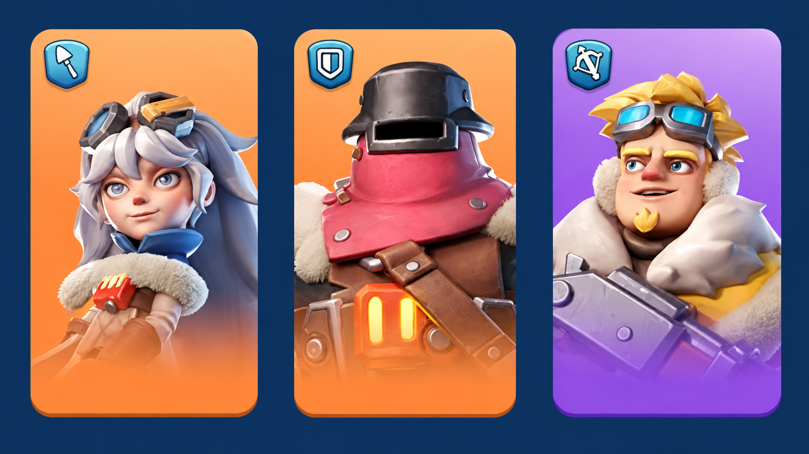
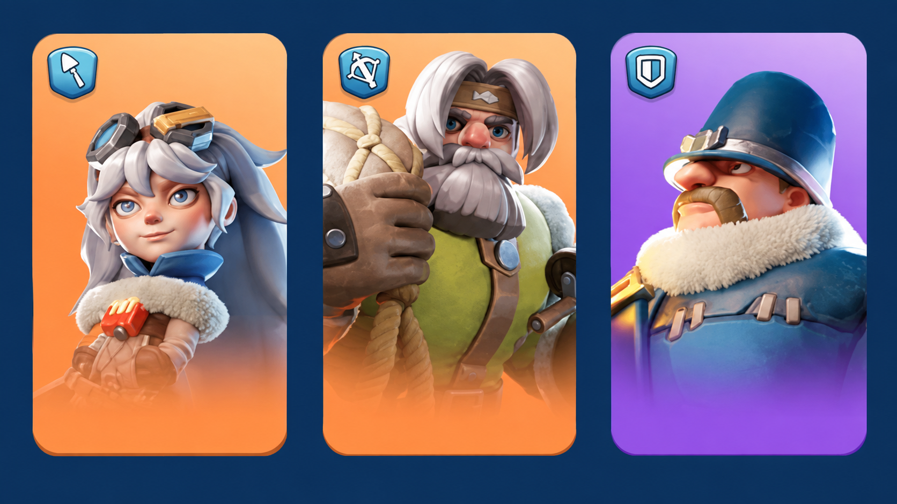
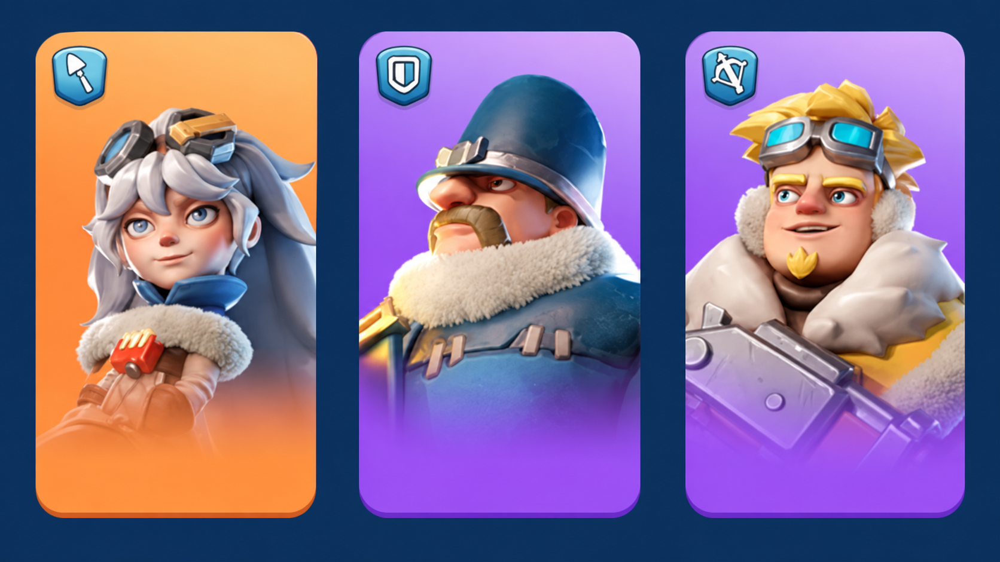
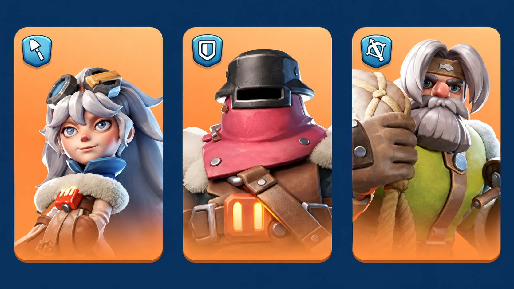
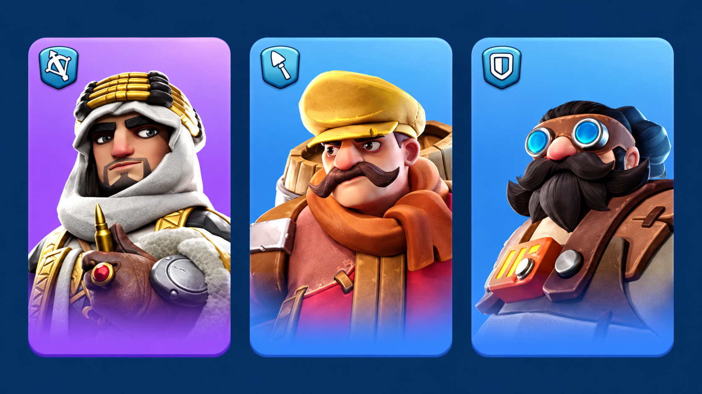
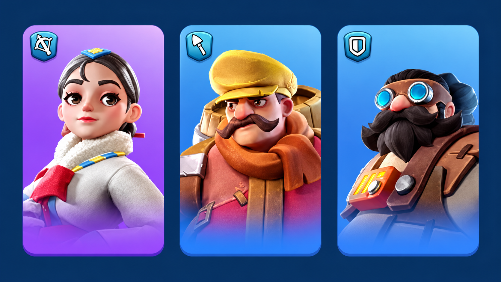
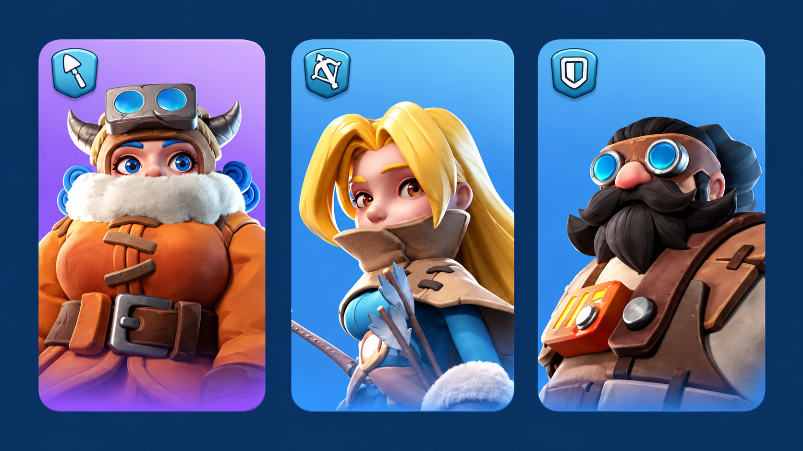

Охота на медведя
Шпаргалка для тех, кто присоединяется к чужому рейду. Самое важное здесь: правильно выбрать первого героя.
Охота на медведя
Шпаргалка для тех, кто присоединяется к чужому рейду. Самое важное здесь: правильно выбрать первого героя.
СОЗДАТЕЛЬ РЕЙДА
У создателя рейда работают экспедиционные навыки всех трёх героев.
Это может быть до 9 экспедиционных навыков, если у каждого героя открыты все три.
Поэтому для собственного рейда важно выбирать героев не только по общей силе.
Особенно полезны навыки, которые повышают:
- атаку;
- урон;
- смертоносность;
- другие атакующие характеристики армии.
Защитные навыки и лечение против медведя обычно дают намного меньше пользы.
Сравнивайте отчёты нескольких рейдов. Более сильная по цифре тройка героев не всегда наносит больше урона.
ПРИМЕРНЫЕ ВАРИАНТЫ ДЛЯ СОЗДАНИЯ РЕЙДА
Ниже — примерные варианты троек героев для создания собственного рейда.
У создателя рейда важны все три героя, потому что работают их экспедиционные навыки.
Это именно примеры: окончательно ориентируемся по реальным отчётам охоты в 58 государстве.




СОСТАВ ВОЙСК
Против медведя основную часть урона обычно наносят стрелки, поэтому их долю можно увеличивать.
Хорошие варианты для тестирования:
10% пехоты / 10% копейщиков / 80% стрелков
10% пехоты / 30% копейщиков / 60% стрелков
Это не обязательная формула.
Лучший состав зависит от вашей текущей прокачки, героев и войск, поэтому ориентируйтесь на реальные отчёты охоты в 58 государстве.
Чем больше войск помещается в рейд, тем выше потенциальный общий урон.
КАК ПРАВИЛЬНО ПРИСОЕДИНЯТЬСЯ К РЕЙДУ
Для участника самое важное — герой, поставленный первым.
Из вашей тройки героев в бонусы общего рейда попадает первый экспедиционный навык первого героя.
Поэтому перед отправкой отряда всегда проверяйте, кто стоит на первой позиции.
Подходящие первые герои
Для нашего государства используем уже подтверждённых героев:
- Джесси
- Джассер
- Джеронимо
- Со-Юн
Их полезные атакующие навыки помогают увеличить общий урон рейда.
Героев поздних поколений сюда не добавляем, пока они не подтверждены для 58 государства.
Первый герой должен быть именно тот, который стоит первым на примере. Второй и третий герои могут быть любыми — они нужны в основном для увеличения отряда.



КАК РАБОТАЮТ НАВЫКИ УЧАСТНИКОВ
В общий рейд могут попасть до четырёх первых экспедиционных навыков присоединившихся игроков.
Посмотреть активные навыки можно через жёлтый флажок рейда.
Игра учитывает не просто первых четырёх вошедших игроков.
Большое значение имеет уровень первого навыка героя.
Более высокий навык может занять место более слабого.
Если в рейде стоит полезный навык 4 уровня, а позже входит герой с навыком 5 уровня, новый навык может получить приоритет.
Поэтому особенно важно не отправлять первым героя с сильным, но бесполезным для медведя навыком.
Герой с высоким уровнем бесполезного навыка способен занять один из четырёх важных слотов и снизить результат всего рейда.
СКЛАДЫВАНИЕ БОНУСОВ
Подходящие атакующие навыки участников могут работать одновременно.
Поэтому рейд особенно эффективен, когда в нём собрано несколько правильных первых героев.
сильный создатель рейда + четыре полезных первых навыка участников.
ВТОРОЙ И ТРЕТИЙ ГЕРОЙ
У присоединившегося игрока навыки второго и третьего героя не входят в четыре основных бонуса участников.
Поэтому при присоединении главное внимание уделяем именно первому герою.
Второго и третьего героя можно подбирать с учётом количества отправляемых войск и других доступных вам бонусов.
ПЕРЕД ОТПРАВКОЙ ОТРЯДА
Перед нажатием кнопки присоединения проверьте:
- правильного первого героя;
- количество отправляемых войск;
- состав войск;
- свободное место в рейде;
- активные бонусы, доступные вашему городу.
Если правильного первого героя уже нет, лучше не отправлять случайного героя с высоким бесполезным навыком.
УСИЛЕНИЕ ЛОВУШКИ
Ловушку медведя можно усиливать с помощью специальных предметов.
Усиление имеет 5 уровней.
Чем сильнее улучшена ловушка, тем больше урона сможет наносить альянс во время события.
Внешние источники расходятся. Для сайта используем только информацию, подтверждённую русским интерфейсом 58 государства.
ПИТОМЦЫ
Перед охотой можно использовать доступные в вашем государстве навыки питомцев, которые помогают вашему собственному отряду.
Особенно полезны бонусы, связанные с:
- вместимостью армии;
- скоростью марша;
- боевыми характеристиками войск.
При этом не следует считать, что обычный бонус питомца одного игрока автоматически усиливает весь рейд.
Используем только питомцев, которые уже доступны в 58 государстве.
РАСПОЛОЖЕНИЕ ГОРОДА
Во время охоты важно сократить время между рейдами.
Поэтому участникам желательно располагать города как можно ближе к ловушке.
Чем быстрее войска возвращаются и снова доходят до медведя, тем больше рейдов можно успеть провести за время события.
СОХРАНЁННЫЕ ОТРЯДЫ
Перед началом охоты удобно заранее сделать несколько сохранённых отрядов.
Это позволяет быстрее отправлять войска и не терять время на перестановку героев во время события.
Создаёте рейд — важны все три ваших героя и их экспедиционные навыки.
Присоединяетесь — главное поставить правильного героя первым.
В рейде работает до 4 первых навыков участников.
Против медведя обычно выгодно увеличивать долю стрелков.
Не ставьте первым случайного героя с высоким бесполезным навыком.
Усиливайте ловушку.
Ставьте город ближе к медведю.
Используйте заранее сохранённые отряды.
Главная цель охоты — не просто отправить как можно более сильную армию, а собрать правильные бонусы всего рейда.